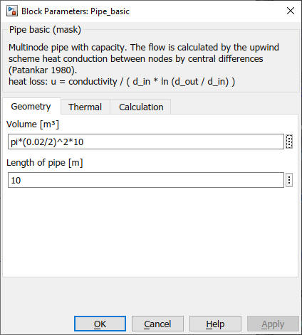
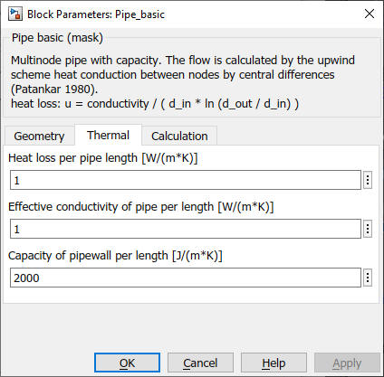
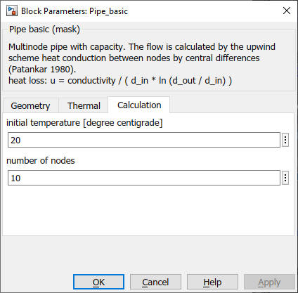

Pipe_basic
Path: CARNOT/Basic/Thermal_Models
Purpose:
Thermal 1xN node model a pipe including thermal losses.
Description:
The thermal pipe model is a one-dimensional mulitnode model. It includes
heat capacity of the wall, heat losses to the environment, thermal conductivity
between nodes, heat transfer by mass flow and thermal losses to the ambient.
The basic differential equation for the heat and mass transfer is solved by
the finite volume method [Patankar, 1980]. The transfer due to convection is
calculated by the upwind scheme (the flow only comes from the last node in flow
direction). Thermal conductivity is calculated by central differences. The
resulting differential equation for one node is:
(cwall*length/Vnode
+ cp*rho)* dT/dt =
U * Aloss / Vnode * (Tamb
- Tnode)
+ cond / dh2 * (Tnextnode - Tnode)
+ cond / dh2 * (Tlastnode - Tnode)
+ mdot * cp / Vnode *
(Tlastnode - Tnode)
with
| Symbol | used for | Unit |
| Aloss | surface area for losses | m2 |
| cond | effective axial thermal conductivity | W/m/K |
| cp | heat capacity of fluid | J/kg/K |
| cwall | thermal capacity of pipe wall per length | J/m/K |
| dh | distance between two nodes | m |
| mdot | mass flow rate | kg/s |
| r | density of the fluid | kg/m3 |
| T | temperature of the fluid | °C |
| t | time | s |
| U | heat loss coefficent per pipe surface | W/m2/K |
| Vnode | node volume | m3 |
For Fixed-Step Solvers you have to obey the following
condition for the Courant number:
c = timestep * velocity / dh <= 1
Input:
| Tamb | : | ambient temperature for thermal losses °C |
| THBin | : | incomming Thermo Hydraulic Bus |
Output:
| Tnodes | : | node temperature or temperatures of the store in °C |
| THB | : | leaving Thermo Hydraulic Bus |
Parameters and Dialog Box:



Literature:
Patankar: Numerical Heat Tansfer and Fluid Flow, 1980
Characteristics:
| Direct Feedthrough | : | Yes |
| Sample Time | : | Inherited from driving block |
| Vectorized | : | No |